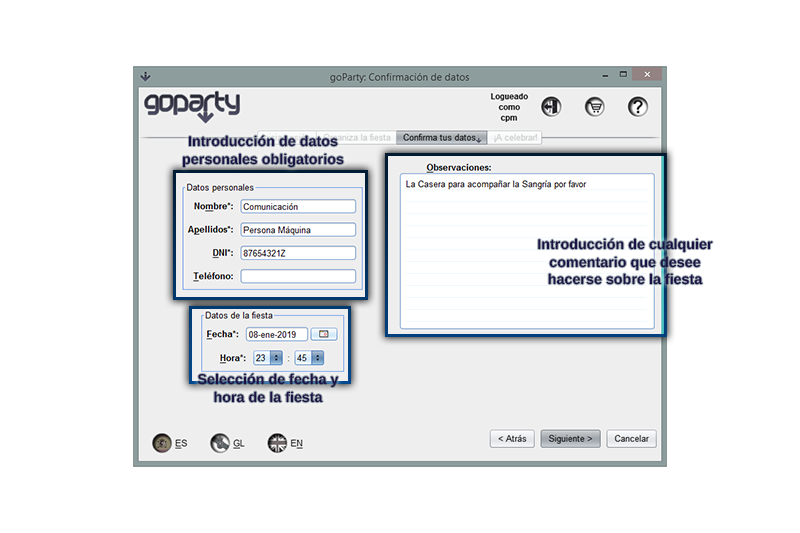
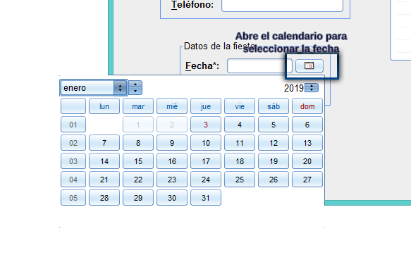

Llegas a la pestaña de introducción de datos cuando has terminado de elegir los artículos de tu fiesta en la pestaña de selección de artículos y es una pestaña donde podrás dar tus datos de contacto y concertar la fecha y hora de la fiesta así como añadir tus observaciones sobre la misma.
Es necesario que proporciones un nombre y un DNI para poder efectuar la reserva de la fiesta, si te has registrado en esta misma sesión de uso de la aplicación tu datos ya se completarán automáticamente, sino deberás proporcionarlos tú. El número de teléfono no es obligatorio pero permitirá ponernos en contacto contigo fácilmente si es necesario.
En el panel de elección de fechas tendrás un calendario desplegable donde elegir la fecha pulsando en el botón del campo respectivo y unos desplegables para la selección de la hora de comienzo de la fiesta.

El panel de texto de la derecha está disponible para que aportes tus observaciones o peticiones concretas acerca de la planificación que no hayan podido ser satisfechass por las opciones anteriores.

Una vez hayas cubierto todo lo necesario podrás avanzar a la pestaña de confirmación donde completar el trámite de reserva de tu fiesta.